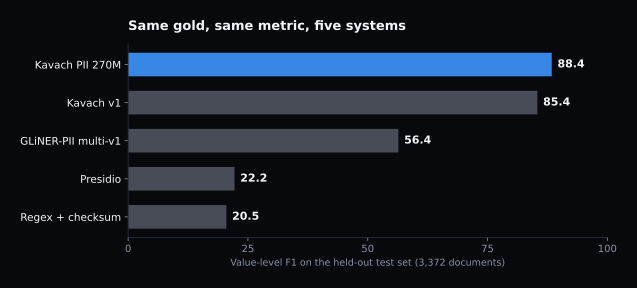
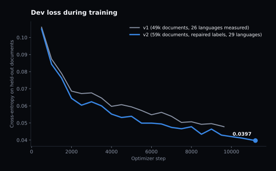
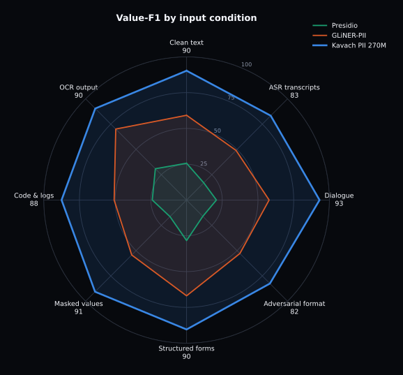
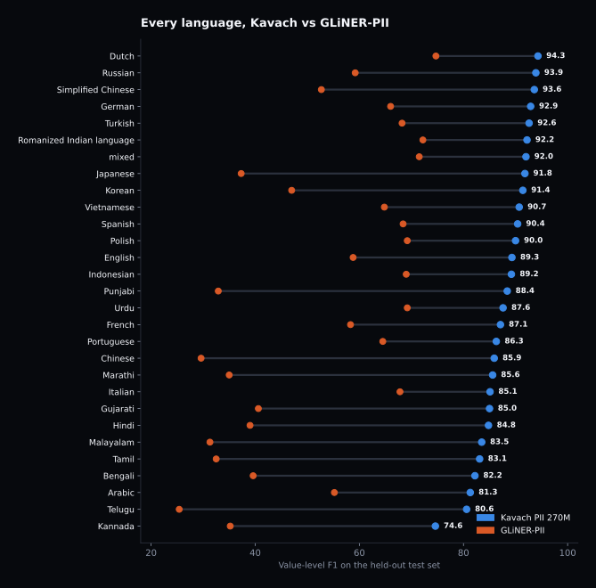
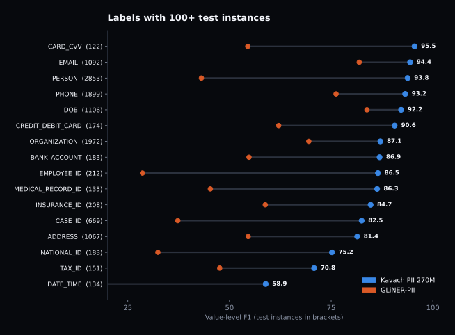
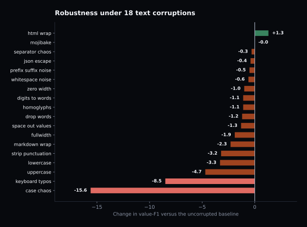
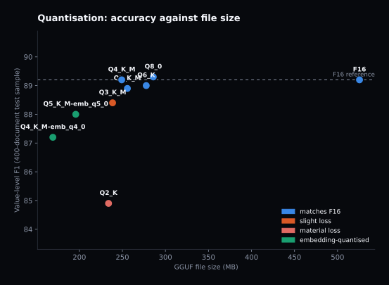

Introducing Kavach PII 270M: a 270M model that finds personal data better than GLiNER, Presidio and spaCy, in 29 languages, trained on one laptop GPU
The problem nobody has actually solved
Every company that handles customer conversations eventually needs to answer the same question: where is the personal data in this text, so we can mask it before it goes into a warehouse, a training set, or a support agent's screen. It sounds like a solved problem. There is a well-known Microsoft library for it. There are regex patterns for card numbers. There are NER models going back a decade.
Then you point any of them at a real call-centre transcript, where the customer spells their account number out loud with an "um" in the middle of it, the agent reads it back wrong and corrects themselves, and half the conversation is in Tamil written in Latin letters. Recall falls off a cliff. Worse, the tools start flagging things that are not personal data at all, and a redaction pipeline that mangles clean text is arguably more damaging than one that misses.
I wanted to know how much of that gap is real difficulty and how much is just nobody having built for the messy case. So I built a model for it. This post is the whole build: the data, the design decision that mattered most, an audit that turned out to be worth more than any training run, the results, and a section on the things that did not work, because three of my hypotheses were wrong and one of them was wrong in an interesting way.

The model is Kavach PII 270M, a fine-tune of Gemma-3-270M. It handles 52 kinds of personal data across 29 languages, it was trained in four hours on a single RTX 5060 Laptop GPU with 8 GB of memory, and it runs in 169 MB as a quantised GGUF on a CPU. Both the model and the quantised builds are on Hugging Face.
| On 3,372 held-out documents | Kavach PII 270M | GLiNER-PII multi-v1 | Presidio | Regex + checksum |
|---|---|---|---|---|
| Value F1 | 88.4 | 56.4 | 22.2 | 20.5 |
| Precision | 88.9 | 56.9 | 21.0 | 51.1 |
| Recall | 87.9 | 55.9 | 23.4 | 12.8 |
| Exact span F1 | 89.1 | 55.4 | 22.3 | 20.0 |
| Redaction recall | 93.0 | 66.2 | 43.2 | 15.6 |
| False positives on PII-free documents | 0.4% | 80.2% | 85.3% | 28.8% |
Look at the last row before the first one. Presidio flags something in 85 out of every 100 documents that contain no personal data at all. GLiNER in 80. That is the number that decides whether you can actually put a redactor in front of a corpus, and it is the number that almost nobody reports.
Why the existing tools struggle
It is worth being precise about the failure, because "the baselines are bad" is a claim that deserves scrutiny, especially when I picked the test set.
Regex and checksums are precise and nearly blind. 51.1 precision, 12.8 recall. They find an IBAN or an email, and they cannot find a name, an address, or a date of birth, which between them are most of the personal data in a conversation. On our test set they never predicted a single PERSON, ORGANIZATION or ADDRESS, because there is no pattern to write.
Presidio is the default answer in most enterprises and its recognisers are English-first. On multilingual text it collapses. It is also tuned for recall over precision by default, which produces the 85% false-positive rate.
GLiNER-PII is genuinely good, and it is the honest competitor here. Zero-shot, takes arbitrary label names, and gets 56.4. Its weakness is script coverage: 58.8 on English but 29.6 on Chinese, 32.5 on Tamil, 25.4 on Telugu, 37.3 on Japanese. It also carries an 80% false-positive rate on clean documents.
spaCy deserves a mention because it is what most people reach for first. Its NER gives you PERSON, ORG, GPE, DATE and a handful more. It has no concept of a medical record number, an insurance policy ID, a UPI address or a CVV, so it cannot be scored on this task without mapping away most of the label set. It is a general entity recogniser, not a privacy tool.
The decision that mattered most: values, not offsets
A span-detection model normally predicts character positions. Start 47, end 59, label PERSON. That is what a token classifier does naturally, and it is what everyone expects from an NER API.
I went the other way. The model emits a JSON array of values, and nothing else:
[{"label": "PERSON", "text": "Derek Okafor"},
{"label": "ORGANIZATION", "text": "Meridian Bank"},
{"label": "PHONE", "text": "+1-617-555-0142"}]Character offsets are then recovered by looking the values back up in the source text. Longest value first, every non-overlapping occurrence becomes a span, twenty lines of Python.
This sounds like a downgrade. It is the single best decision in the project, for three reasons.
It removes the failure mode generative models are worst at. Asking a language model to count characters produces confidently wrong integers. Copying a string is the thing they are best at. Before committing, I measured the cost: I took every gold annotation in the corpus, threw away the offsets, and tried to recover them from the values alone. Across 207,879 spans, 99.92% recovered exactly. The residual is almost entirely one case: a SIGNATURE whose text is identical to a PERSON name elsewhere in the same document, which value-only annotation genuinely cannot separate.
It makes hallucination detectable. A value the model invents will not be found in the source text. That gives you a free, automatic integrity check on every prediction, and a number you can report: on the test set, 194 of 13,646 predicted values (1.4%) did not occur in the input. Try getting that signal out of a model that emits indices.
It finds every occurrence for free. A customer's phone number mentioned four times gets masked four times, because the locator matches all of them, even though the model listed the value once.
Building 65,000 documents that look like real work
No real personal data was used anywhere in this project. Everything is synthetic, generated against a blueprint and passed through quality gates.
| Split | Documents | Labelled values | PII-free documents |
|---|---|---|---|
| train | 58,596 | 211,589 | 11,164 |
| dev | 3,339 | 13,019 | 743 |
| test | 3,372 | 13,646 | 736 |
The corpus spans 29 language groups, 23 domains and 12 input conditions. The conditions are the point. Clean text is 43% of it. The rest is ASR transcripts with no punctuation and spoken digits, real OCR output from rendering documents in a headless browser and running Tesseract over them, structured forms, two-speaker dialogue with read-backs and corrections, partially masked values, code and logs, and adversarial formatting with zero-width characters, homoglyphs and full-width digits.
Roughly 19% of documents contain no personal data at all. These are not blank filler. They are realistic text from the same domains containing lookalikes: order numbers, version strings, timestamps, amounts, loopback IP addresses, place names, job titles. A negative that simply says "this record contains no PII" teaches the model to detect the announcement, so the generation prompt forbids it and a gate rejects any that slip through.
The gates did real work. During the final generation round they rejected 106 documents for English leaking into supposedly monolingual Urdu or Korean text, 64 for containing personal data in a document that was meant to be a hard negative, and 59 for malformed annotation markup. Those rejections cost extra generation calls. They also kept English contamination out of the Urdu training distribution, which is exactly the kind of quiet corruption that would have been invisible in the final numbers.
Splitting without leaking
Documents are grouped by synthetic identity, so every document mentioning a given generated person lands on one side of the split. On top of that, any document derived from another one, an ASR rewrite or an OCR round trip, moves with its source.
That second rule caught a real leak. Some documents embed several source samples inside a long Wikipedia passage. When I moved one of those into the test set because one embedded sample belonged there, it dragged along other samples that were still in training. My split script has an assertion for exactly this, and it aborted the write twice before I fixed the logic. Both times the leak would have been invisible in the final numbers and would have inflated them.
The audit was worth more than the training run
After the first model finished I had 86.1 F1 on dev and a list of weak labels. The obvious next step was more data for the weak spots. Instead I spent a day auditing the labels, and it changed the plan completely.
The check is simple. For every value that is tagged somewhere in the corpus, find every other place that exact string appears, and ask how often it is tagged there too. If the same string is a positive in one document and a negative in the next, no amount of data will fix that label. The model is punished either way.
| What I found | Measurement | What it meant |
|---|---|---|
| GEO_LOCATION contradicted its own guideline | Bare city names tagged 15.6% of the time (Mumbai 16%, Chennai 3%, Delhi 0%) | Unlearnable noise, not a model weakness |
| DATE_TIME mislabelled dates of birth | 14 of 18 model "errors" had an explicit birth cue nearby | The model was right, the gold was wrong |
| PERSON false positives were mostly gold misses | 66% contained a name from the generator's own identity pool | Precision was understated |
| A third of errors were boundary mismatches | 310 of 917 found the entity with different edges | Different problem from a miss |
The DATE_TIME finding is my favourite because of how it surfaced. The model kept labelling things
DOB that the gold called DATE_TIME. I wrote a check for a birth cue near the value, in twenty
languages, and the first version said only 5 of 18 had one. Then I noticed my regex used
\b word boundaries, which do not work against Devanagari or Vietnamese. Fixing that
took it to 14 of 18. The model had been right the whole time and my verification was broken in the
same direction as my assumption.
So the plan changed from "train harder" to "repair the labels, re-measure, and only then retrain". The repairs were deterministic, scripted and reversible: 1,264 bare place names dropped from GEO_LOCATION, 525 DATE_TIME spans relabelled to DOB where a birth cue was present, and 100 GEO_LOCATION values that were actually street addresses moved to ADDRESS rather than deleted, because throwing them away would have cost real recall.
Training
LoRA at rank 64 on all attention and MLP projections, 15.2M trainable parameters against a frozen bf16 base. Three epochs, 11,202 steps, four hours on one 8 GB laptop GPU.

Two implementation details were worth more than any hyperparameter.
The loss only looks at completion positions. Gemma-3 has a 262,144-token vocabulary. Materialising logits for every position in a batch is what eats the memory. Since the loss is only defined on the assistant's JSON, the model runs the language-model head on just those positions. Measured on the same batch: identical loss to four decimal places, 2.3 GB peak instead of 8.7 GB. That one change is what let a 262K-vocab model train on an 8 GB card at a useful batch size.
Windows will not tell you it has run out of VRAM. Halfway through the first run,
throughput collapsed from 2,000 tokens per second to 90. No error, no out-of-memory, GPU
utilisation still reading 100%. The Windows display driver had started paging GPU memory into
system RAM. The tell is in a performance counter rather than in nvidia-smi:
\GPU Process Memory(*)\Shared Usage showed gigabytes against the Python process.
Capping PyTorch's share with torch.cuda.set_per_process_memory_fraction(0.80) fixed
it, and the run held about 1 second per step for four hours. If you train on Windows, watch that
counter.
Results
Across input conditions

| Condition | Test documents | Kavach | GLiNER | Presidio |
|---|---|---|---|---|
| Dialogue transcripts | 266 | 93.1 | 57.8 | 20.9 |
| Masked or partial values | 162 | 90.6 | 54.3 | 16.4 |
| Structured forms | 239 | 90.4 | 66.9 | 28.3 |
| OCR output | 74 | 90.4 | 70.1 | 30.9 |
| Clean text | 1,382 | 90.3 | 59.2 | 25.7 |
| Code and logs | 118 | 87.5 | 50.7 | 24.0 |
| ASR transcripts | 695 | 83.3 | 49.0 | 17.0 |
| Adversarial formatting | 247 | 82.5 | 52.8 | 16.1 |
Every language, with error bars
This is the part I care about most, and the part that took the most work to be able to state honestly. In the first version, several languages had 13 to 18 test documents. Russian scored 60.0 and I nearly wrote "Russian is weak" in the notes. Then I bootstrapped a confidence interval over those documents and got 37 to 79. The number meant nothing.
So before the second training run I generated 10,255 more documents specifically to bring every language to at least 80 held-out test documents, which is roughly a five-point interval. Only then are per-language claims worth making.

| Language | Test docs | Kavach F1 | 95% interval | GLiNER | Gain |
|---|---|---|---|---|---|
| Dutch | 81 | 94.3 | 91.6 to 97.0 | 74.7 | +19.6 |
| Russian | 81 | 93.9 | 91.2 to 96.1 | 59.2 | +34.7 |
| Simplified Chinese | 81 | 93.6 | 90.8 to 95.9 | 52.7 | +40.9 |
| German | 82 | 92.9 | 90.1 to 95.1 | 66.0 | +26.9 |
| Turkish | 83 | 92.6 | 89.7 to 95.2 | 68.2 | +24.4 |
| Romanized Indian | 85 | 92.2 | 89.3 to 95.3 | 72.2 | +20.0 |
| Japanese | 85 | 91.8 | 88.5 to 94.7 | 37.3 | +54.5 |
| Korean | 80 | 91.4 | 87.8 to 94.5 | 47.0 | +44.4 |
| English | 994 | 89.3 | 88.2 to 90.4 | 58.8 | +30.5 |
| Punjabi | 83 | 88.4 | 84.9 to 91.6 | 32.9 | +55.5 |
| Hindi | 105 | 84.8 | 80.8 to 88.5 | 39.0 | +45.8 |
| Tamil | 97 | 83.1 | 78.6 to 87.2 | 32.5 | +50.6 |
| Telugu | 82 | 80.6 | 73.6 to 86.8 | 25.4 | +55.2 |
| Kannada | 80 | 74.6 | 69.7 to 79.0 | 35.2 | +39.4 |
Fourteen of the twenty-nine are shown; the full table is in the model card. Kannada at 74.6 is the weakest and is the obvious target for the next round.
One finding that surprised me: training volume barely predicts per-language quality. The correlation between the number of training documents in a language and its dev F1 was r = 0.20. Japanese with 228 training documents scored 91.8. Hindi with 2,082 scored 82.2. What matters more is how well the base model already knows the script, and what mix of noisy conditions that language's documents happen to contain. This saved me from the obvious and wrong plan of throwing thousands of documents at the low scorers.
By label

What did not work
Three experiments failed, and the failures are more informative than most of the successes.
The regex union made things worse
The obvious production design is a hybrid: run the model, run checksum and regex recognisers, take the union, get the model's understanding plus the rules' precision on structured identifiers. I built it and measured it. Recall went up by 0.4 points. Precision fell by 4.0, and the false-positive rate on clean documents went from 0.4% to 9.0%. Overall F1 dropped from 88.4 to 86.6. The rules mostly fire on things the model already found, and where they fire alone they are usually wrong. The hybrid is not in the shipped configuration and the model card says not to build it.
The case-augmentation fix only half worked
The robustness suite applies eighteen corruptions to held-out documents. Random per-character capitalisation was by far the worst, costing 16.8 F1 and pushing the false-positive rate on clean documents from 0 to 10.8%.
The cause looked obvious and satisfying. I checked the augmentation mix and found that
uppercase was the only one of eighteen operations missing from it entirely, and
case_chaos was weighted at 0.04. At the augmentation probability used for the first
run, the model had seen uppercase text in 0% of training documents and case-chaos in about 1%.
So I rebalanced the mix by measured weakness, raised the probability, and retrained. Uppercase robustness improved by 3.5 points. Case-chaos improved by 1.2. Keyboard-typo robustness got 2.6 points worse. The gains in the second model came from the data and the label repairs, not from my augmentation theory. The advice in the model card is therefore the unglamorous one: normalise case before you call the model.

A measurement error that nearly became a headline
After repairing the labels I re-scored the first model and it appeared to drop from 86.1 to 83.3. I was about to write that the repair had hurt. The predictions file had been generated before the split changed, so 145 documents had no prediction at all and were being counted as complete misses. On a like-for-like comparison the repair was neutral on carried-over documents and clearly positive on the labels it touched. The lesson is mundane and cost me an hour: check that your prediction file has as many rows as your gold file before believing a delta.
Quantisation, and an architecture that breaks the usual advice
I built the full ladder of GGUF quantisations and measured each one for accuracy, speed and memory on the same 400 documents. The results are not what the usual guidance predicts.

| Build | Size | Value F1 | Change | FP on clean docs |
|---|---|---|---|---|
| F16 | 526 MB | 89.2 | reference | 0.0% |
| Q8_0 | 286 MB | 89.3 | +0.1 | 0.0% |
| Q4_K_M | 249 MB | 89.2 | +0.0 | 0.0% |
| Q3_K_M | 239 MB | 88.4 | -0.8 | 0.0% |
| Q2_K | 234 MB | 84.9 | -4.3 | 2.3% |
| Q5_K_M with q5_0 embedding | 196 MB | 88.0 | -1.2 | 0.0% |
| Q4_K_M with q4_0 embedding | 169 MB | 87.2 | -2.0 | 0.0% |
Q2_K saves 15 MB over Q4_K_M, costs 4.3 F1, and triples the false-positive rate. It is strictly a bad trade, and the reason is structural.
The token embedding is 63% of this model's parameters. 262,144 tokens by 640 dimensions is 168M of the 268M total. llama.cpp keeps embeddings at high precision by default, so a nominal Q2_K build only reaches 6.88 bits per weight instead of the usual 2.6. You are paying accuracy for compression that mostly does not happen.
The hidden size is 640, which is not divisible by 256. That is the K-quant block
size, so during quantisation llama.cpp silently falls back to q5_0 or
q8_0 for most tensors. It prints a warning per tensor, which is easy to scroll past.
Quantising the embedding as well is what gets the model to 169 MB. There is a trap there too:
--token-embedding-type q4_K converts the tensor, then fails a GGML assertion when
writing the file, and llama-quantize still exits with status 0. You end up with a
file of plausible size that llama.cpp refuses to load with invalid magic characters.
I only caught it because I tried to load every artefact before benchmarking it. Use the block-32
legacy types, q4_0 or q5_0, for the embedding.
Using it
The model is on Hugging Face in two repositories: the transformers model with the LoRA adapter alongside it, and a GGUF repository with the quantised builds.
from transformers import AutoTokenizer, AutoModelForCausalLM
MODEL = "inboxpraveen/Kavach-PII-270M"
tok = AutoTokenizer.from_pretrained(MODEL)
model = AutoModelForCausalLM.from_pretrained(MODEL, dtype="bfloat16").to("cuda").eval()
msgs = [{"role": "user", "content": f"{INSTRUCTION}\n\nText:\n<<<\n{text}\n>>>"}]
prompt = tok.apply_chat_template(msgs, tokenize=False, add_generation_prompt=True)
out = model.generate(**tok(prompt, return_tensors="pt").to("cuda"),
max_new_tokens=768, do_sample=False)It serves under vLLM and SGLang with a single command each, and under llama.cpp, Ollama or LM Studio from the GGUF builds. The exact instruction string matters: the model was trained on one specific prompt and paraphrasing it costs accuracy. Use greedy decoding. If an output fails to parse, retry that one document with a repetition penalty of 1.1, which recovered 45 out of 45 failures in testing; applying the penalty to every request instead lowers accuracy by 1.4 points.
Both repositories also ship kavach_extract.py, a single function that does
everything around the model call: it splits long input into overlapping windows, locates every
returned value in the original string, merges the windows and gives you character offsets. It
needs nothing outside the standard library. Two things in it turned out to matter more than I
expected.
The first is window size, and I got it wrong twice before the numbers settled. My first guess was that more context helps, since telling a date of birth from an appointment date depends on a cue that may sit a sentence away. My second guess, after an early measurement, was that tiny windows win. Both were wrong, and the second was wrong because of a bug in my own chunker: when a window edge snapped back to a line break, the next window started past the words in between, so a few words of every document were never sent to the model at all. At a 50-word window that silently dropped words from 19% of texts, and at 30 words from 46%. Nothing I was checking could see it, because the spans that did come back were all correct.
With that fixed, the picture is a compromise between two opposite failures. Cut a coherent document too small and precision goes: on 92 real test documents of 180 to 385 words, a 50-word window scores 0.727 precision where the same documents sent whole score 0.861, because the model has lost the surrounding sentence it needs to pick the right label. Hand it too much at once and recall goes: on 660-word inputs, recall falls from 0.86 at a 100-word window to 0.51 at 400. The median training document is 39 words, so the model emits about as many entities as a short document holds and then stops; it does not produce a four-times-longer list for four times the text. A 120-word window with 25 of overlap is the one setting near the top of both curves. On coherent documents anything from 120 words up to sending the whole thing lands in a one-point band, so the choice hardly matters; on concatenated text the spread is much wider and 120 is clearly the safer end of it.
I had also convinced myself that small windows were faster, on the grounds that output length dominates runtime. That was an artifact of the same buggy run. Measured properly, more calls cost more: 245 calls at a 30-word window took 171 seconds against 113 seconds for 68 calls at 100 words.
The second is how you match a returned value back to the source. The obvious implementation is
re.escape plus finditer, and it is wrong in a way that only shows up
in the output. On the test set it places 127 spans, just under 1%, inside longer words:
Raj lands in the middle of Rajesh, 2024 inside
20245, and redaction then emits [PERSON]esh. A word-boundary check
fixes it, but a plain \b is not that check, for exactly the reason that broke my
DATE_TIME audit earlier in this post: it does not work against Devanagari, where the combining
vowel sign that continues a word is not an alphanumeric character. The rule that does work
treats combining marks as part of the word, and switches the boundary test off entirely for
Chinese, Japanese, Thai, Khmer, Burmese and Korean, where words are not separated by spaces or,
in Korean's case, particles attach straight onto the noun. With that in place, 98.1% of
predicted values locate as a whole word, 0.6% only inside a longer run and are flagged rather
than hidden, and the remaining 1.4% are the hallucinations the value-only design was built to
expose.
Transcripts need no special handling. Bracketed timestamps, SRT ranges and WebVTT cues survive redaction untouched, because 630 training documents contain bracketed timestamps and not one of them is tagged, so the model simply learned to ignore them.
from kavach_extract import extract_pii, redact, transformers_generate
result = extract_pii(transcript, transformers_generate(model, tok))
print(redact(transcript, result["spans"]))
# [00:00:03] Speaker 1: Hello, this is [PERSON] from [ORGANIZATION].
# [00:00:09] Speaker 2: Hi [PERSON]. My parcel is [CASE_ID] and my mobile is [PHONE].Where it is genuinely weak
Identifier typing has a hard ceiling. Given KX-77255 with no cue
word nearby, no model can tell you whether that is an employee number or a case reference. I
measured this: of the confusions between identifier types, only 15% had a disambiguating cue
within 40 characters. For redaction this mostly does not matter, since the value still gets
masked, and redaction recall holds at 93.0 even where type accuracy dips. For a system that routes
on type, it matters a lot.
DATE_TIME is contextual by nature and sits at 58.9. A date is only personal data when it is attached to a person, and that judgement is genuinely ambiguous in a lot of text.
The gold came from the same pipeline as the training data. This is the honest caveat on every number in this post. It is my test set, held out and never used for tuning decisions, but it is mine. Independent evaluation on third-party corpora is the obvious next step and I have not done it yet.
Six labels are too thin to score. ETHNICITY, AGE, GENDER_SEX, DISABILITY, POLITICAL_BELIEF and BIOMETRIC_DESCRIPTOR have under ten test instances each. Their per-label numbers are noise and the model card says so.
What this is useful for
The obvious use is redaction before text goes somewhere it should not: into an analytics warehouse, a vendor's API, a fine-tuning corpus, a screen-share. Redaction recall of 93% with a 0.4% false-positive rate on clean documents is a usable operating point for that.
Less obvious, and the thing I did not expect: it works as a general structured-extraction model for the identifier-shaped parts of a document. Case numbers, policy numbers, medical record numbers, invoice references. These are exactly what spaCy has no labels for and what regex gets wrong whenever the format varies. If you are pulling identifiers out of forms or emails today with a pile of patterns, this is worth measuring against.
It is also small enough to run where the data is. 169 MB on a CPU means the text never leaves the machine, which for healthcare and financial deployments is frequently the whole requirement.
What is next
Kannada, Telugu, Bengali and Arabic are the weakest languages and the next round targets them. The sensitive-attribute labels need enough test support to be measurable. Case robustness needs a better answer than "normalise first", and I suspect the answer is character-level augmentation during pretraining rather than at fine-tune time. Evaluation against third-party PII corpora is the credibility gap I most want to close.
The training recipes, the generation blueprint and the evaluation harness will go out with the next release. If you try the model on your own data I would like to hear what breaks.
Resources & Links
The models and tools compared or used:
Gemma-3-270M-IT, the base model; GLiNER-PII multi-v1 and the GLiNER paper (Zaratiana et al., 2023); Microsoft Presidio with spaCy en_core_web_lg; llama.cpp (build b11120) for GGUF conversion and quantisation; PEFT for LoRA; Tesseract for the OCR round trips.
Standards and references:
HIPAA Safe Harbor, the 18 identifiers; PCI DSS; the Gemma Terms of Use and Prohibited Use Policy, which govern the model weights; LoRA (Hu et al., 2021).